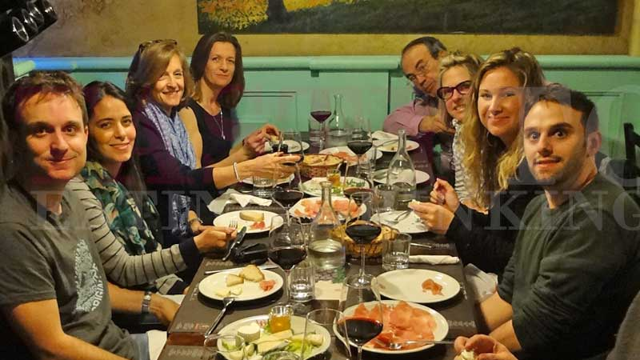
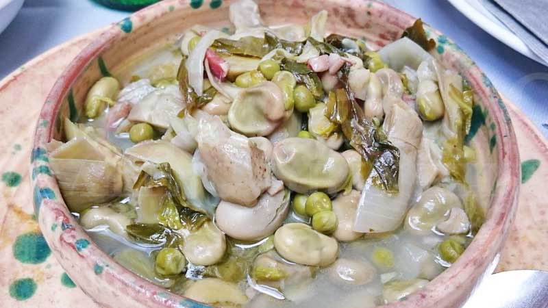
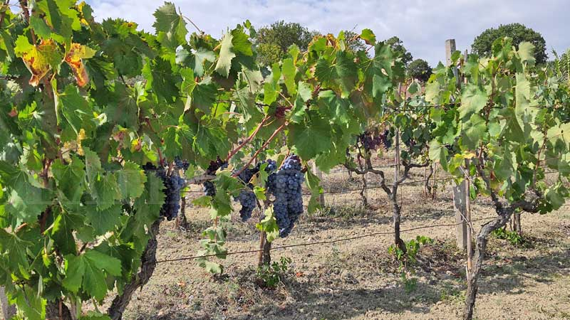

Naples Food Tours & Experiences
Many world-famous Italian food specialties were born in Naples: the pizza Margherita, the spaghetti, the buffalo mozzarella for instance. On our food tours and culinary experiences you will taste and visit the best of this unique pictoresque city led by local passionate and knowledgable guides. You will discover the Genovese sauce, the Baba, the Sfogliatella and other delicious Neapolitan food. We offer not only food tours but also cooking classes and team building activties for corporate events, groups of friends, families and bachelorettes' parties.
Our Naples Street Food tours
A street food tour is a walking tour where you stop and taste many local specialties from authentic local eateries on the street and in the markets. It is not very long, approximately 2,5 hours. Not much time to sit.

Trastevere Street Food Tour
Our local and expert guide will take you to the hidden treasures of Trastevere neighborhood in Rome and will show you the best food, precious art and impressive history facts. You will discover family-run restaurants, ancient bakeries and traditional delis. If you don't have any familiarity with this district, it is easy to get lost or to fall into low quality food: this is why, having an expertith you, may help to focus the best places where to spend an unforgettable time!

The area around Campo de' Fiori in Rome is rich of traditional eateries and important historic ruins and monuments. It is a pleasant walk that stops in the Jewish Ghetto to try the famous authentic fried artichokes surrounded by the ruins of the Porticus of Octavia, Augustus sister. You will also see the Pantheon, the Theatre of Pompey, the church of St. Andrew and much more while stopping at amaing eateries to try suppli', gelato, tiramisu and other local specialties made by artisans.
Read More

Visit the largest farmers' market in the center of Rome as well as historic bakeries, pastry shops, coffee roasters and wine producers. It is one of the most authentic food tour you can take in the city, located off-the-beaten paths, in an area where many locals still live. You will taste Porchetta, Pizza Romana, Cesanese Wine, local Pecorino cheese, Cannoli alla creama and many other famous local specialties. Trionfale market is 5 minutes away from the Vatican City and the Sistine chapel. This tour is a great option to take before you visit the museums.
Read More
Our Naples Sit-and-taste Food tours
A sit and taste food tour is a 4 hour eating dringing and sightseeing experience where you stop and sit in multiple restaurants and in each one you taste its special delis and wines. Then you stand up, walk a bit then stop and sit again in another unique eatery to try someting new. And so on until the gelato:-)
This famous food tour in the Jewish Ghetto area is like a big dinner where you stop and sit in many different traditional eateries each time tasting something different. It not only walking then, but you also get accommodated in some of the most famous and unique restaurants in the city, one of them located underground in the ruins of an Ancient Roman theatre! You will eat and drink a lot and it will be more than a usual dinner. It is time to taste an authentic pasta Carbonara, Amatriciana, Cacio e Pepe, Fried Artichokes, Gelato, Tiramisu and much more. Options are available for vegetarians.
Read More
Visit the largest famrers' market in the center of Rome as well as historic bakeries, pastry shops, coffee roasters and wine producers. It is one of the most authentic food tour you can take in the city, located off-the-beaten paths, in an area where many locals still live. You will taste Porchetta, Pizza Romana, Cesanese Wine, local Pecorino cheese, Cannoli alla creama and many other famous local specialties. Trionfale market is 5 minutes away from the Vatican City and the Sistine chapel. This tour is a great option to take before you visit the museums.
Read More
It is one of the most memorable and fun experiences you can take in Rome. You will make your own pasta and tiramisù in a traditional Roman kitchen under the supervision of an expert local chef. You will put your hands in the dough and like an Italian grand-ma you will prepare your and eat what you make. It is a great activity to do with your family, group of friends, businees colleagues or in a bachelorette' party:-)
Read More
Our Cooking Classes and other Special Food Experiences in Rome
A sit and taste food tour is a 4 hour eating dringing and sightseeing experience where you stop and sit in multiple restaurants and in each one you taste its special delis and wines. Then you stand up, walk a bit then stop and sit again in another unique eatery to try someting new. And so on until the gelato:-)
It is one of the most memorable and fun experiences you can take in Rome. You will make your own pasta and tiramisù in a traditional Roman kitchen under the supervision of an expert local chef. You will put your hands in the dough and like an Italian grand-ma you will prepare your and eat what you make. It is a great activity to do with your family, group of friends, businees colleagues or in a bachelorette' party:-)
Read More
It is a great activity for team bulding, bachelors and bachelorettes parties, groups of friends and families. It is a fun a way to discover the traditional Roman food and culture by visiting and tasting the most beautiful corners of the city led by a local expert. You will be divided in teams and compete to win valuable prizes while eating and drinking great food and wine. Never heard about this kind of experience? Contact us and try it. You will love it!
Read More
Our Special & Customized Products
We customize tours and experiences on your times, wishes and needs.

FOOD TOURS FOR TEAM BUILDING BACHELORS & BUSINESS COLLEAGUES
It is probably the best way to expierience Italy culture and flavors with your colleagues & mates.

COOKING CLASSES
Pizza and traditional dishes classes that will remain in your memories forever.

DRIVING fOOD TOURS
Discover Italy's food treasures with our drivers and guides that can pick you up from your accommodation, port or airport.
FREQUENTLY ASKED QUESTIONS ABOUT OUR TASTY TOURS AND FOOD EXPERIENCES
These are the most common questions asked by our past guests before organizing the first event with us. You few have more do not hesitate to contact us.
- 1
I DO NOT DRINK ALCOHOL, CAN I STILL PARTICIPATE?
Of course, you can! While we do highlight typical regional alcoholic drinks on our experiences, most of our tours are not focused on alcoholic beverages. If you booked a tour that included drinks, please, advise us at the time of booking that you prefer not to drink alcohol, and our guides will provide non-alcoholic drinks instead
- 2
WHAT HAPPENS IN CASE OF BAD WEATHER?
Our tours takes place rain or shine, so come prepared! Bring an umbrella and comfortable shoes. Please check beforehand the conditions and dress appropriately.
- 3
WHAT IF WE HAVE DIETARY RESTRICTIONS?
We offer vegetarian and pescatarian options on our tours! Please advise in case you need any dietary arrangements at the time of booking. Unfortunately, we cannot cater for other dietary restrictions such as: gluten-free, dairy-free and vegan. In case of other allergies, please, advise us in advance and be aware of possible cross contaminations issues.
- 4
ARE THE TOURS ACCESSIBLE TO BABY STROLLERS?
Unfortunately not, due to small alleyways, deli shops and multilevel restaurants, our tours are not wheelchair or baby stroller accessible. We suggest you to use a baby carrier.
- 5
ARE THE TOURS ACCESSIBLE TO PEOPLE WITH DISABILITIES?
For the same reasons above our tours are not wheelchair accessible. We are very sorry for that.
- 6
ARE THERE BATHROOM STOPS??
Yes, there are, but not in all stops. Your tour guide will let you know when the next restroom opportunity available.
- 7
WHAT IS THE CANCELLATION POLICY?
For a full refund cancellation must be informed by e-mail at least 24 hours before the experience’s start time. If you cancel less than 24 hours before the experience’s start time, the amount you paid will not be refunded.
Plan Your Tour Easily
Contact us ahead of time sow e can organize and plan your trip in the best way.
Itineraries studied in detail
Our expert guides have prepared carefully designed tours and activities to see more and save time.
Sleep Well, No Hassle!
We care about making your experience smooth and memorable. Our team supports you from beginning to end.
Planning and Organization
If you plan and organize things with us you will not be disappointed and waste time and energy during your vacation.
Our Precious Partners
We partner with top travel organization & experienced professionals to protect your experiences .